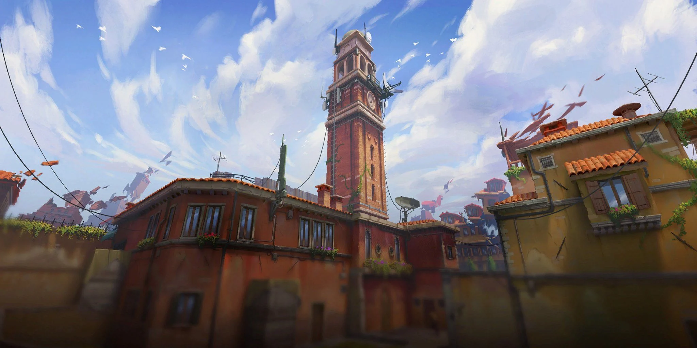

O FPS da Riot Games contém uma coleção vasta de skins, tendo diversos estilos de armas possibilitando
que os jogadores encontrem uma skin que mais se adequa ao seu gosto. É claro que no meio de tantas
skins algumas delas acabam se destacando, seguindo essa linha, fizemos um top 3 melhores skins de algumas armas.
Sejam elas as que ainda estão na rotação da loja ou até mesmo as exclusivas de eventos.
